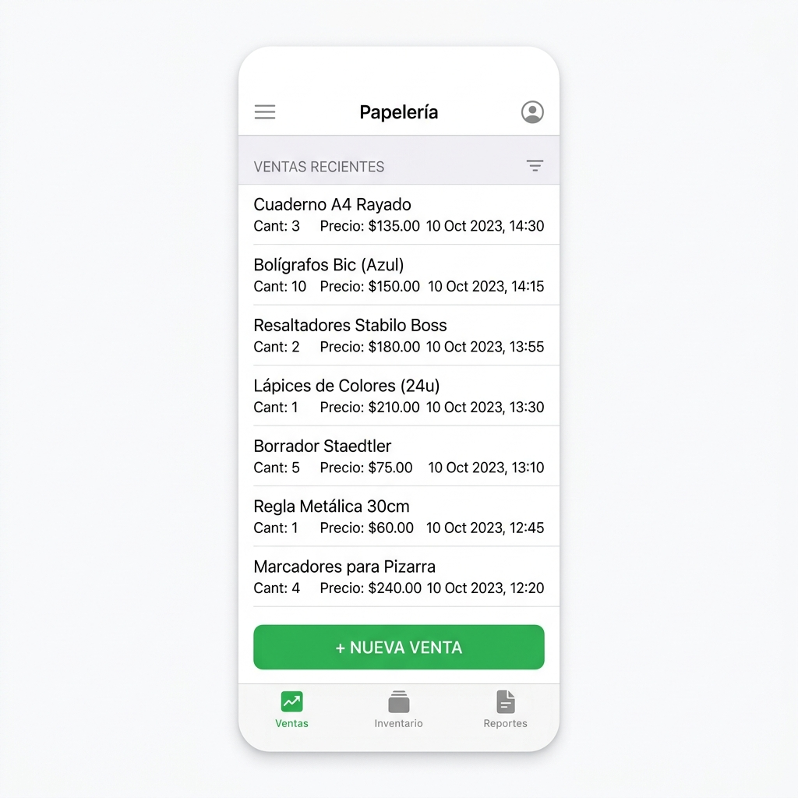
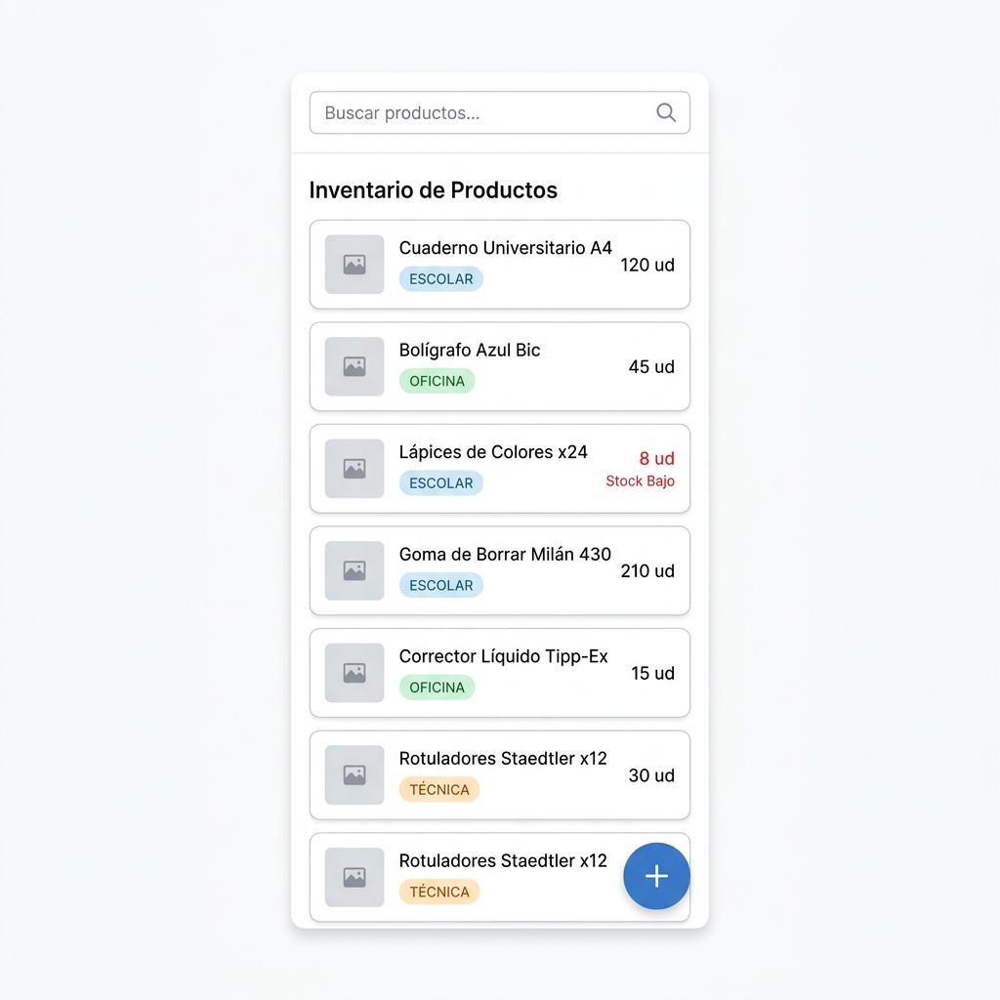
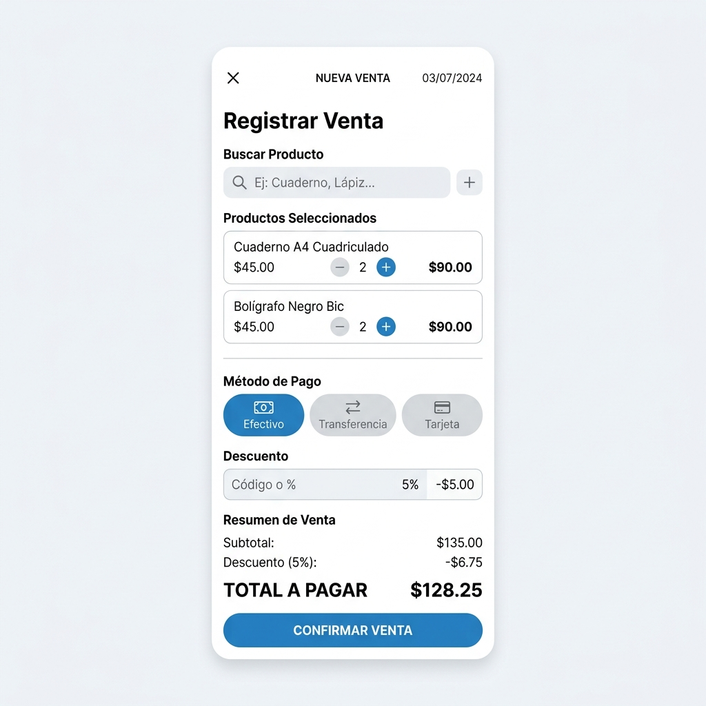

Instituto Tecnológico de Milpa Alta II
Materia: Fundamentos de Ingeniería de Software
Docente: Roldán Aquino Segura
Equipo: Ingeniebrios (Papelería)
Edgar Salazar López
César Meza Corella
Misael Silva Fragoso
Marco Antonio Aguilar Guerrero
Instituto Tecnológico de Milpa Alta II
Materia: Fundamentos de Ingeniería de Software
Docente: Roldán Aquino Segura
Equipo: Ingeniebrios (Papelería)
Edgar Salazar López
César Meza Corella
Misael Silva Fragoso
Marco Antonio Aguilar Guerrero
Para la elaboración de los mockups se utilizó Figma, una herramienta de diseño de interfaces basada en navegador que permite crear prototipos de alta y baja fidelidad de forma colaborativa. Se eligió Figma porque el equipo ya tenía experiencia básica con ella y porque permite exportar las pantallas en formatos de imagen de calidad para incluirlas en la documentación. Otra razón de peso fue que Figma tiene una versión gratuita que cubre perfectamente las necesidades de este proyecto.
El proceso de elaboración consistió en:
1. Primero definimos en papel (a modo de boceto rápido) cuáles serían las pantallas más importantes del sistema, considerando las reglas de negocio que identificamos en la etapa anterior.
2. Con esos bocetos como referencia, abrimos un proyecto nuevo en Figma y configuramos el tamaño del frame en formato de celular (375 x 812 px, equivalente a un iPhone estándar).
3. Construimos cada pantalla usando componentes básicos: rectangulos, texto, íconos y colores. Mantuvimos un diseño minimalista para que el propietario de la papelería pueda usar el sistema sin confusión.
4. Revisamos cada pantalla preguntándonos si el flujo tenía sentido para alguien que nunca ha usado un sistema de punto de venta digital.
A continuación se presentan las tres pantallas principales del sistema propuesto. El diseño es mobile-first porque, como se obtiene de las reglas de negocio, el propietario quiere operar el sistema desde su teléfono celular.
Esta es la pantalla de inicio de la aplicación. Muestra el historial de ventas del día con producto, cantidad y precio. El botón principal "Nueva Venta" es visible y accesible desde cualquier punto de la pantalla. La barra de navegación inferior permite moverse entre las tres secciones: Ventas, Inventario y Reportes.

Esta pantalla muestra todos los productos dados de alta en el sistema. Cada tarjeta incluye el nombre del producto, su categoría (Escolar, Oficina o Técnica) y la cantidad disponible. Cuando el stock baja de cierto umbral, el número se muestra en rojo con la etiqueta "Stock Bajo" para que el encargado lo detecte visualmente de un vistazo, que es exactamente cómo ya lo hace hoy. El botón flotante permite agregar nuevos productos.

Esta es la pantalla más importante del sistema. Se diseñó para ser lo más ágil posible: el encargado busca el producto, ajusta la cantidad con botones de más y menos, elige el método de pago (Efectivo, Transferencia o Tarjeta), aplica descuento si hay alguna promoción vigente, y confirma la venta. El total se calcula automáticamente. Todo en una sola pantalla, sin pasos intermedios.

La herramienta utilizada para los diagramas de casos de uso fue draw.io (también conocido como diagrams.net), una aplicación web gratuita que permite crear diagramas UML de forma sencilla. Se eligió porque no requiere instalación y permite exportar los diagramas como imagen o PDF.
El proceso fue el siguiente: primero listamos todos los actores que interactúan con el sistema (el encargado/propietario y el sistema mismo), luego identificamos cada acción que el usuario puede realizar, y finalmente los organizamos dentro del diagrama agrupando por módulo.
A continuación se describen los casos de uso principales del sistema:
CU-01: Registrar venta
1. El encargado presiona "Nueva Venta".
2. Busca el producto en la barra de búsqueda o lo selecciona de la lista.
3. Ajusta la cantidad con los botones +/-.
4. Selecciona el método de pago.
5. Si aplica, ingresa el descuento del producto.
6. Confirma la venta.
7. El sistema registra la transacción y regresa a la pantalla de inicio.
CU-02: Consultar inventario
1. El encargado toca el ícono de Inventario en la barra inferior.
2. El sistema muestra la lista de productos con nombre, categoría y cantidad.
3. Los productos con stock bajo se resaltan visualmente en rojo.
4. El encargado puede buscar un producto específico con la barra de búsqueda.
CU-03: Agregar producto al inventario
1. Desde la pantalla de inventario, presiona el botón flotante +.
2. Ingresa el nombre del producto, categoría, precio unitario y cantidad inicial.
3. Guarda el producto.
4. El sistema lo agrega a la lista de inventario.
CU-04: Registrar devolución
1. El encargado accede al historial de ventas.
2. Localiza la venta correspondiente.
3. Selecciona el producto a devolver y confirma.
4. El sistema revierte el monto y suma la unidad de vuelta al inventario.
CU-05: Ver reportes de ventas
1. El encargado accede a la sección "Reportes".
2. Selecciona el periodo de consulta.
3. El sistema muestra el total de ventas, el desglose por método de pago y los productos con mayor movimiento.
El proyecto se divide en cuatro etapas principales. Los tiempos están estimados en semanas de trabajo del equipo.
| # | Etapa | Actividades principales | Duración estimada |
|---|-------|------------------------|------------------|
| 1 | Análisis y requerimientos | Investigación, entrevista, identificación de reglas de negocio | 1 semana |
| 2 | Diseño de la solución | Mockups, diagramas de casos de uso, arquitectura del sistema | 1 semana |
| 3 | Desarrollo | Implementación del frontend móvil y lógica de negocio | 3 semanas |
| 4 | Pruebas y entrega | Pruebas funcionales, correcciones, documentación final y subida al repositorio | 1 semana |
Total estimado: 6 semanas
El equipo trabajará de forma paralela en las actividades de diseño y preparación del entorno durante la etapa 2, para que al iniciar el desarrollo ya esté todo listo.
A continuación se presenta el listado completo de actividades organizadas por etapa, con su estimación de tiempo individual:
ETAPA 1 – Análisis
| ID | Tarea | Responsable | Tiempo estimado |
|----|-------|-------------|----------------|
| T-01 | Investigación sobre papelerías y negocios similares | Equipo | 4 horas |
| T-02 | Diseño del cuestionario de entrevista | Edgar, César | 2 horas |
| T-03 | Realizar la entrevista al propietario | Equipo | 1 hora |
| T-04 | Transcripción y análisis de respuestas | Misael, Marco | 3 horas |
| T-05 | Redacción del documento de reglas de negocio | Edgar | 3 horas |
ETAPA 2 – Diseño
| ID | Tarea | Responsable | Tiempo estimado |
|----|-------|-------------|----------------|
| T-06 | Bocetos en papel de las pantallas principales | Equipo | 2 horas |
| T-07 | Creación de mockups en Figma | César, Marco | 5 horas |
| T-08 | Elaboración de diagramas de casos de uso en draw.io | Misael | 4 horas |
| T-09 | Revisión y ajuste de mockups con base en retroalimentación | César | 2 horas |
| T-10 | Redacción del documento de diseño y gestión | Edgar | 3 horas |
ETAPA 3 – Desarrollo
| ID | Tarea | Responsable | Tiempo estimado |
|----|-------|-------------|----------------|
| T-11 | Configuración del entorno de desarrollo | Marco | 3 horas |
| T-12 | Implementación de pantalla de inicio y lista de ventas | César | 6 horas |
| T-13 | Implementación del módulo de registro de ventas | Edgar | 8 horas |
| T-14 | Implementación del módulo de inventario | Misael | 8 horas |
| T-15 | Implementación del módulo de devoluciones | Edgar | 5 horas |
| T-16 | Implementación de reportes de ventas | Marco | 6 horas |
| T-17 | Integración y pruebas internas de cada módulo | Equipo | 4 horas |
ETAPA 4 – Pruebas y entrega
| ID | Tarea | Responsable | Tiempo estimado |
|----|-------|-------------|----------------|
| T-18 | Pruebas funcionales de todos los flujos | Equipo | 4 horas |
| T-19 | Corrección de errores encontrados en pruebas | Equipo | 3 horas |
| T-20 | Organización del repositorio de GitHub | Marco | 2 horas |
| T-21 | Redacción del documento final en PDF | Edgar, César | 3 horas |
| T-22 | Subida de toda la documentación al repositorio | Marco | 1 hora |
El repositorio del proyecto está disponible en GitHub bajo el nombre del equipo. Los archivos están organizados de la siguiente manera:
| Archivo | Descripción |
|---------|-------------|
Reporte_Final_Analisis.md / .pdf | Documento con la investigación previa, metodología, entrevista realizada y análisis de las reglas de negocio. |
Reglas_de_Negocio.md / .pdf | Escrito independiente con la descripción detallada de las reglas de negocio obtenidas en la entrevista. |
Diseno_y_Gestion.md / .pdf | Este documento. Contiene los mockups, casos de uso, cronograma y lista de tareas del proyecto. |
mockup_ventas.png | Imagen del mockup de la pantalla principal de ventas. |
mockup_inventario.png | Imagen del mockup de la pantalla de inventario de productos. |
mockup_nueva_venta.png | Imagen del mockup de la pantalla de registro de nueva venta. |
tecnmmilpa_medium.jpg | Logotipo del Instituto Tecnológico de Milpa Alta II. |
proveedora-de-papelerias-1.jpg.webp | Imagen ilustrativa de una papelería, usada en el reporte de análisis. |
generar_pdf.py | Script de Python para convertir los documentos Markdown a PDF usando LibreOffice. |